Drone aerial photography is developing fast today. DJI aerial drones, with their strong performance, have become a benchmark product in aerial photography. Their stable video transmission, precise flight control, and high-definition video output win the trust of professional pilots. They are also the first choice of many aerial photography fans. As the low-altitude economy grows, drone aerial work is now widely used in film, news documentary, tourism promotion, and farm monitoring. It creates many jobs and showcases for practitioners. To use a DJI drone well and shoot a god's-eye view with both impact and storytelling, a pilot must master the flying skills and keep improving through practice. The pilot must also use post-editing well to give the footage more artistic force. Only by combining precise flying with creative editing can you make a smooth, high-quality one-take film.
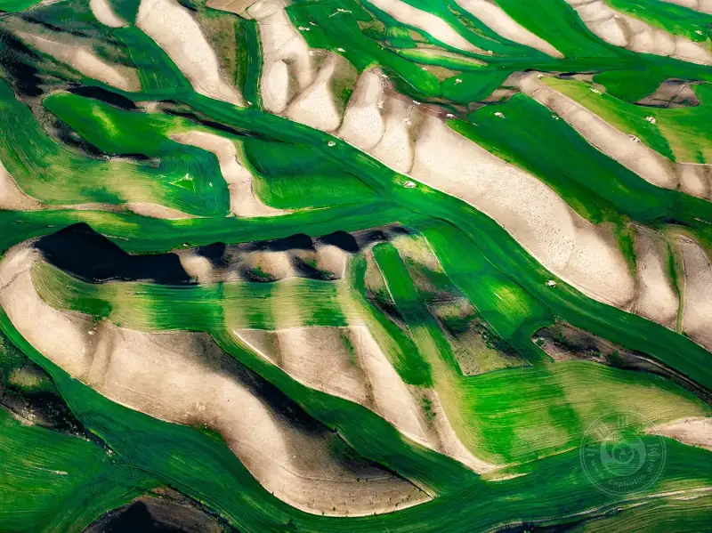
Special Award, 5th National Aerial Photography Contest Bird's-Eye Vision 2024
Green Waves, by Li Yanping (Guangzhou, Guangdong)
The dual-stick control system of a DJI drone is the core of its many camera moves. Its sensitivity and precision are professionally tuned. A pilot who controls the force, speed, and range of the left and right sticks, and switches control modes smoothly, can avoid stutter and shake. This gives a smooth, flowing camera move. This core logic runs through the whole flight. From pre-flight preparation, to framing in flight, to special scenes, skilled stick control is the base. Adjust it to the scene, and you turn the device into good images.
01
Pre-flight check
Build the base for flight safety and image quality
A full pre-flight check is the key to safe flight, working equipment, and good footage. A small oversight can cause an accident or a failed shoot. Build a strict checking habit, and go through each step in order to set a solid base.
First check the propellers. As the core power part of the drone, their condition and fit directly affect flight safety. Look at each blade for scratches, cracks, or chips. Even a small local defect can disturb the airflow in flight, throw a propeller, and cut the flight short or destroy the drone. If you find damage, replace the whole pair with new blades of the same model, so they match. To fit a blade, line it up with the motor mount and tighten it clockwise or counterclockwise as the manual says, until you hear a clear click. This confirms it is seated and tight. Also tell the clockwise and counterclockwise blades apart, or the drone will not fly correctly.
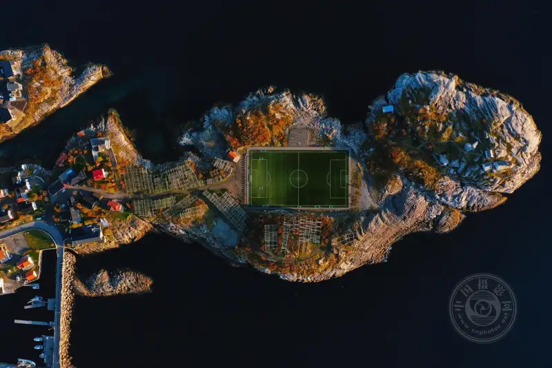
Special Award, 5th National Aerial Photography Contest Bird's-Eye Vision 2024
The Football Field at Sunset, by Li Jiaying (Ningbo, Zhejiang)
Next check and prepare the battery. The battery powers the drone, so its state directly affects flight time and safety. When you fit it, make sure it seats fully in the body mount and the locking pin clicks in. Again, the click means it is seated, and this stops it from falling out in flight. Battery temperature affects performance strongly. In cold conditions, the battery is less active, lasts less, and may cut out suddenly. So before a flight below 15 degrees Celsius, warm the battery with a proper heater. Fit it only when it is above 20 degrees Celsius. Also check the remaining charge, and plan flight time around the shoot. Keep at least 30 percent as an emergency reserve, so you do not fail to return because the battery is low.
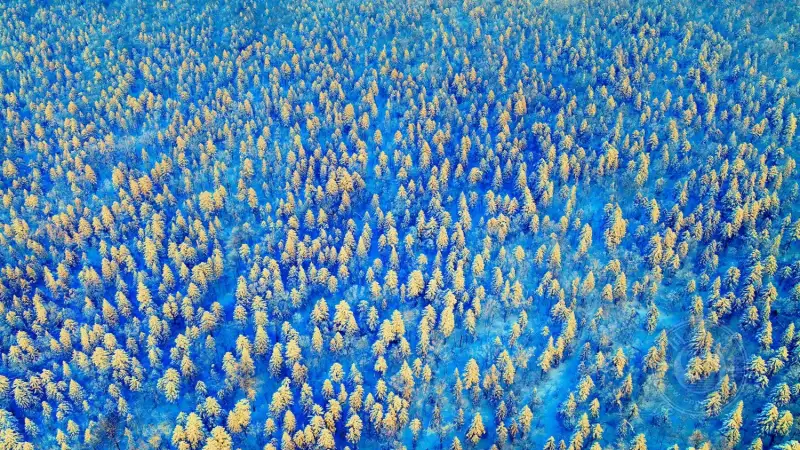
Special Award, 5th National Aerial Photography Contest Bird's-Eye Vision 2024
Beautiful Changbai Mountain (one of a series), by Ai Guisheng (Changbai Mountain, Jilin)
Finally, start the drone and calibrate the environment. After you fit the propellers and battery, unfold the arms slowly and the drone powers on by itself. Watch the body lights to confirm it starts correctly. Then survey the flight area fully. Check for obstacles, crowds, and power lines. Judge the height of buildings and the spread of trees, and plan a safe flight path and shooting range. Calibrate the compass and navigation for your location before the flight. During calibration, stay away from metal and sources of radio interference. Turn the body slowly as the device prompts, so the data is correct and the drone does not drift because of a bad compass. Always turn on the obstacle-avoidance switch. The all-direction obstacle avoidance of a DJI drone lowers collision risk, but you must still stay alert and not rely on it fully. Also watch the satellite signal. The drone can hover and hold position precisely only when it locks more than 20 GPS satellites. Then start the motors with the inner-cross gesture and get ready to fly. Set the maximum flight height and distance in the device, and follow the local drone rules. In general, the maximum height should not exceed 120 meters, so the flight stays legal.
02
Safe control guide in flight
Control the flight state and the shooting rhythm
After takeoff, do not rush into the real shoot. First run a safe control test and judge the flight state of the device fully. Start framing only after you confirm that all is normal. This is a key step for safe flight and good footage.
After takeoff, first raise the drone to about two meters and let it hover in place. Watch how steady the hover is. Good hovering is the base of sharp images. If it drifts or shakes clearly, check the GPS signal, the compass, or the air, and fix the problem before you continue. Then test the basic moves in order: climb, descend, fly forward and back, and fly sideways. Feel the sensitivity of the controls, and adjust the stick force step by step to find your own rhythm. Within sight, add speed, slow down, turn, and stop short. Watch the response speed and stability, and learn the feel of the device. Keep the drone in sight the whole time, so you do not make control errors beyond visual range. Also watch the body lights, the remote signal, and the battery level, so the device works normally.
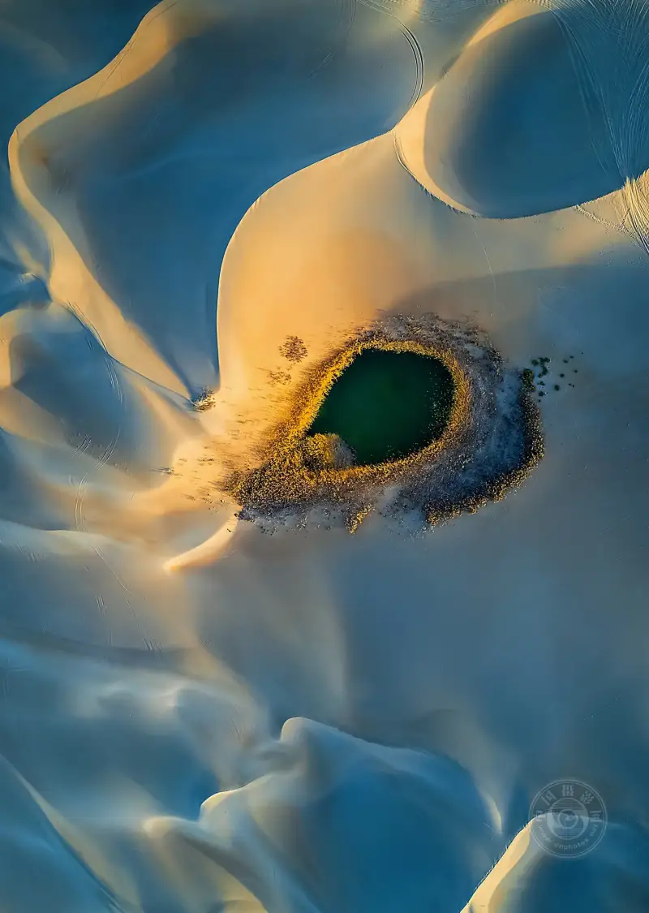
Special Award, 5th National Aerial Photography Contest Bird's-Eye Vision 2024
The Desert Rabbit, by Yaqierdi·Maimaitijiang (Karamay, Xinjiang)
After the basic control test, frame the shot again and again to fit the shoot. As you frame, plan the flight path around the theme and the scene. Do not switch direction and speed often, or the footage becomes messy. Adjust the flight speed to the content. For a wide panorama, raise the speed a little to show a broad view. For a close detail, lower the speed so the frame stays sharp and steady. Also watch the flight height. Changing the height gives different angles and adds layers to the image. Stay alert to the surroundings, and avoid sudden obstacles and turbulence, so the flight stays safe. Keep a calm mind, and do not rush. Shoot a little extra footage, so you have more options for editing.
03
Principles and tips for aerial framing
Build a visual story with logic and layers
Aerial framing is not simply flying up to take a photo. It follows principles and tips. By combining the frame and switching angles, you build a visual story with logic and layers, so the viewer clearly understands the theme and content.
Aerial framing usually follows one logic: from far to near, from large to small, then from near to far. This narrative framing guides the viewer's eye into the theme step by step. At the start, show the whole scene. Pick landmark features, such as a winding road, scattered villages, a rushing river, or wide fields. A wide shot shows the overall look and the geography, so the viewer gets a clear sense of the place. Keep this part steady and smooth, with even speed. Avoid sudden stops and turns.
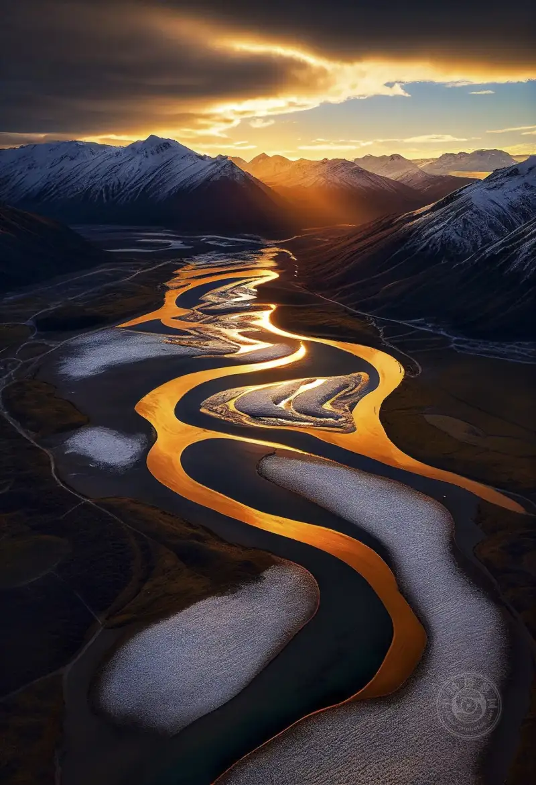
Gold Award, Nature category, 5th National Aerial Photography Contest Bird's-Eye Vision 2024
The Golden River, by Xiao Xueping (Qingdao, Shandong)
After a simple transition, focus the camera on the main subject to show the core content. For a harvest scene, after the wide field shot, aim at a wheat field being cut or a greenhouse where people pick strawberries. A medium shot shows the overall work scene. Then use zoom to focus on moving people or working machines, and give a close-up. Catch the expression on a face or the detail of a running machine, so the frame has more force. To show the joy of harvest, a close-up can focus on a farmer's smile or the full fruit in hand. For an industrial scene, a close-up can catch the fine detail of running machinery or the skilled moves of a worker.
Finally, pull the camera back slowly to the wide shot, and join motion and stillness. This part echoes the opening wide shot. It shows the relation between the subject and the whole setting, and lifts the theme. For a harvest scene, the ending pull-back shows golden fields and scattered villages, with working people and moving machines, forming a complete harvest picture. For a city promotion, the ending shot can pull back from a landmark building to show the layout and bustle of the city.
As you frame, also use light well. Light is the soul of photography. Light at different times and angles gives the frame a different feel. The golden hours of early morning and late evening bring soft light and rich color, and suit images with a strong mood. At noon, the light is harsh. Avoid overexposure, and improve the frame by adjusting camera settings or using shadow. Choose the angle to fit the theme. Besides the common eye-level and top-down angles, try a low angle or a side angle for a unique visual.
04
Core camera moves
Use them flexibly for a smooth visual
Camera moves are the key to a better-looking frame. A DJI drone supports many move modes. In real shooting, one move alone often cannot serve a complex scene. Combine different moves to fit the scene and theme, and make a rich, smooth visual.
1. Stratospheric fog scenes:The core of a fog scene is to show the flowing, hazy beauty of the fog and the outline of a landmark. Use a climb plus a fixed-direction time-lapse. First raise the drone to a good height, aim at a landmark such as a peak, a lighthouse, or an old building, start fixed-direction time-lapse, and set good delay values. Let the camera follow the fog slowly, and catch the fog as it wraps around the scene. Pick a foggy day with moderate visibility, so the fog is not too thick. Keep the drone steady, so body shake does not ruin the time-lapse.

Bronze Award, Urban Landscape category, 5th National Aerial Photography Contest Bird's-Eye Vision 2024
Morning Charm of the City, by Zhang Yong (Xuzhou, Jiangsu)
2. Fast-moving birds:When you shoot fast birds such as egrets, swans, or seagulls, catch their flight pose and small details without disturbing them. Use a high overhead view plus a straight forward move plus a side zoom. First raise the drone high, lock the target bird from above, fly straight to follow its path, and slowly zoom from the side to catch its feathers and pose. Match the drone speed to the bird, or you lose the target. Zoom smoothly and evenly, so the frame stays sharp and fluid.
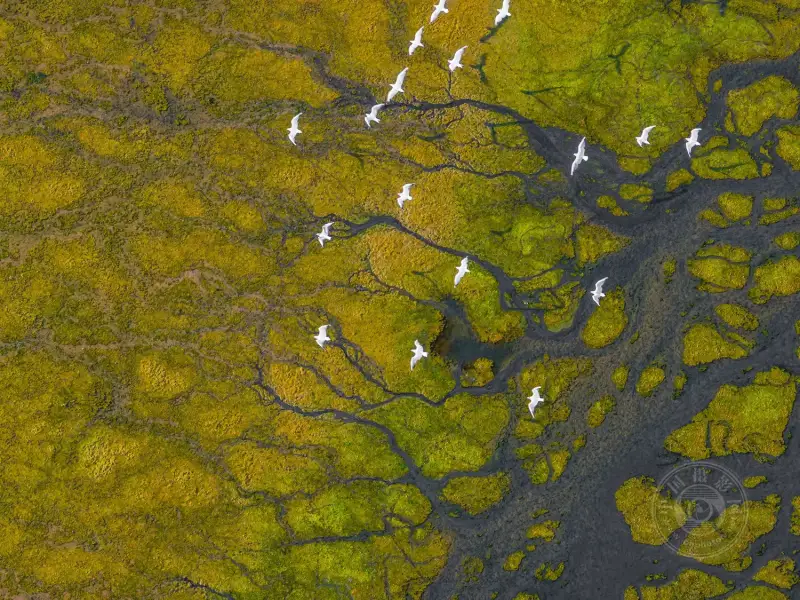
Gold Award, Nature category, 5th National Aerial Photography Contest Bird's-Eye Vision 2024
Leap, by Liu Shijiang (Karamay, Xinjiang)
3. Towers and pavilions:For towers and pavilions, the point is to show their tall, upright shape and their unique structure. Use an orbit with a climb, then an overhead pull-away, then a fixed time-lapse. First orbit the building while climbing slowly, and show the whole structure and its setting. Then tilt to an overhead angle, pull slowly away, and let the building shrink in the frame to show its scale against the setting. Finally, run a fixed time-lapse to record the mix of still and moving elements. Match the orbit speed to the climb, so the frame does not make people dizzy. Keep a safe distance from the building.
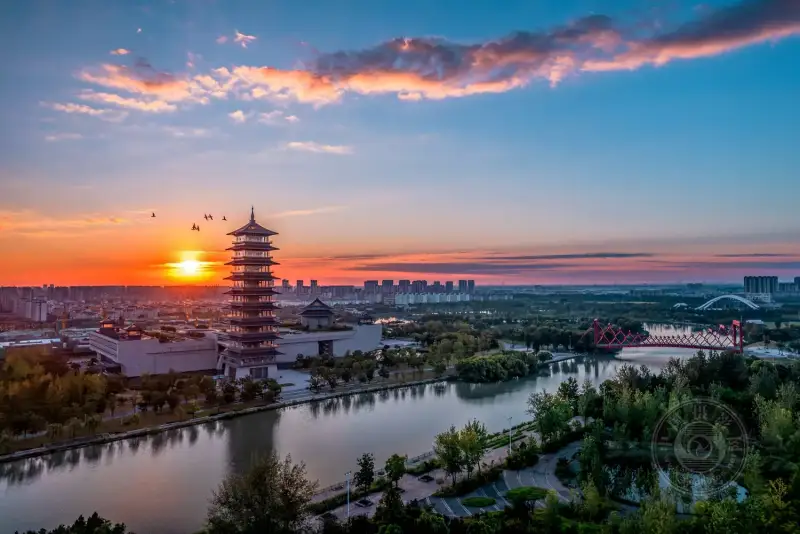
Gold Award, Urban Landscape category, 5th National Aerial Photography Contest Bird's-Eye Vision 2024
The Grand Canal of China Museum, by Zhao Haitao (Nantong, Jiangsu)
4. Reveal move from behind an obstacle:This move is used for a person's entrance or a change of scene. It builds suspense and impact. Use a foreground such as trees, buildings, or a hill to block the camera. Fly the drone slowly sideways and shift the lens, so the background subject, a person or a scene, appears from behind the obstacle. Pick a foreground that relates to the subject. Make the cover and reveal slow and steady, so the transition looks natural and smooth.
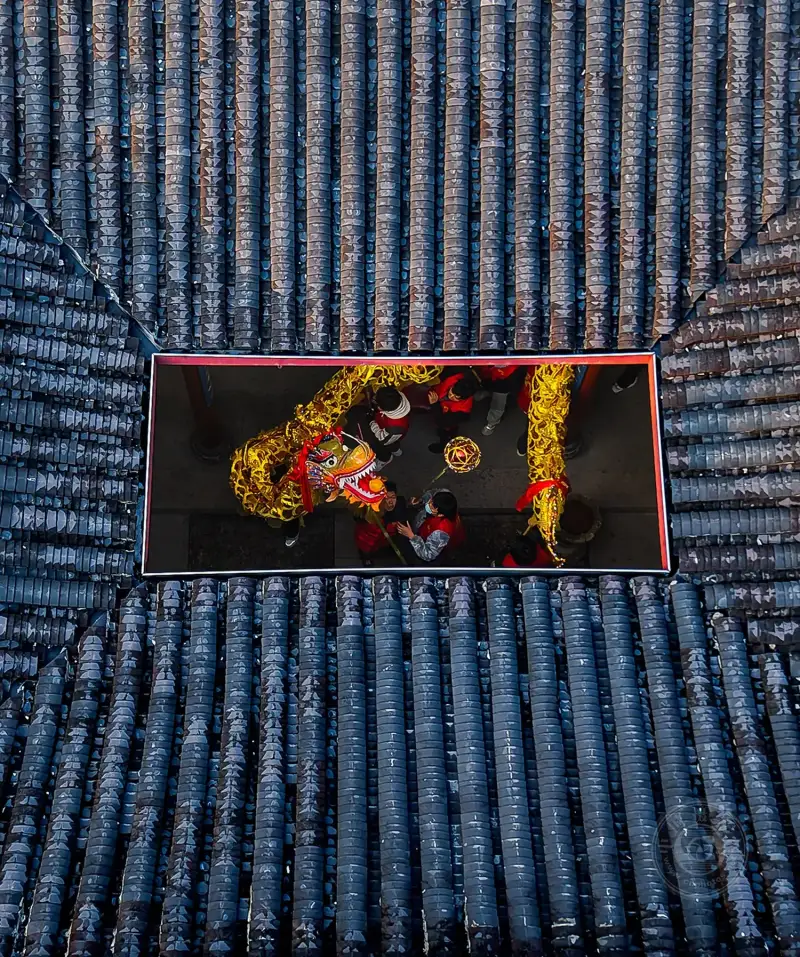
Silver Award, Humanistic Documentary category, 5th National Aerial Photography Contest Bird's-Eye Vision 2024
The Dragon Lantern Festival, by Ye Shuifu (Lishui, Zhejiang)
5. Scenes with strong height difference:For mountains, canyons, or tall city blocks, a straight-up move, like a spring onion shooting from dry ground, gives strong impact. Take off from a foreground such as ground trees or low buildings, climb fast straight up, and keep the lens on a background subject such as a peak or a tall building. Let the subject appear from behind the foreground, and show the scale and height. Adjust the climb speed to the scene. For a large height difference, climb a little faster for more impact, but stay safe and do not hit an obstacle above.
6. Large areas of similar scenery:For large farmland, flower fields, or forests, a one-take move with a manual orbit and zoom shows the broad, orderly beauty of the scene. Keep the one-take path and do not stop or cut in the middle. Orbit manually to show the whole layout. Zoom in when you need to catch details, such as the shape of a flower or the growth of a crop, then zoom back to the wide shot, so the frame has both breadth and depth. Plan the flight path, keep the orbit smooth, and zoom precisely and evenly.
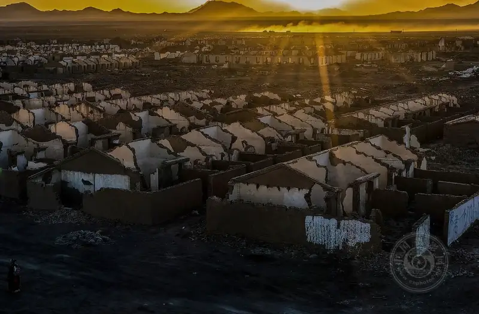
Gold Award, Humanistic Documentary category, 5th National Aerial Photography Contest Bird's-Eye Vision 2024
A Historic Monument: Lenghu is Not Cold (one of a series), by Hu Guangming (Changsha, Hunan)
7. Time-space compression:To create a compressed space and a unique visual, use the Hitchcock zoom. This move changes the lens focal length and the flight distance at the same time, so the foreground and background move closer and the space feels compressed. Fly the drone slowly toward the subject, zoom in the opposite direction, and pull the focal length back. Keep the subject the same size in the frame, while the background rushes toward it. This gives strong impact and compression. Practice first, and match the flight speed to the zoom speed, so the frame does not shake and the subject stays in focus.
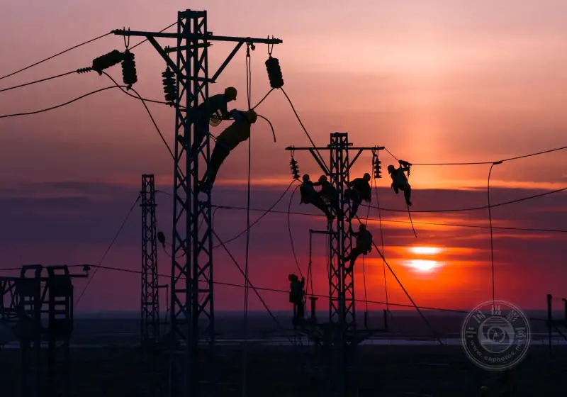
Silver Award, Humanistic Documentary category, 5th National Aerial Photography Contest Bird's-Eye Vision 2024
Notes of Dawn, by Wen Xinghua (Bayingolin, Xinjiang)
8. Reveal the whole scene:For a village, a wood, or a lake, when you want to show the whole look and layout, use a pull-back move. Start on a small part of the scene, fly backward slowly, and keep the lens steady, so the full scene appears in the frame. Fly back evenly and slowly, or the image blurs. Adjust the pull-back distance to the size of the scene, so the frame shows the whole look and the layers and space of the scene.
05
Post-editing and uploading
Bring out the final charm
Good aerial footage needs post-editing to become a complete work. The right platform then gives it more exposure and recognition. In editing, focus on continuity, rhythm, and visual beauty. For upload, learn the features and steps of each platform, so the work publishes smoothly.
(1) Post-editing: refine the work
Before editing, first sort the footage. Keep clips that are sharp, steady, and fit the theme. Remove clips that shake, blur, or have bad exposure. Then import the kept clips into editing software.
For most creators, the desktop version of Jianying (CapCut) is a powerful and easy editing tool. It meets most editing needs. After you import the footage, pick music to match the content and rhythm. The music must fit the style and pace of the frame. A landscape piece can use calm, graceful music. A documentary piece can use steady, broad music. Then grade the image. Adjust saturation, HSL, and the color wheels to improve the color and make the frame bright and natural. You can also add transitions, subtitles, and effects to make the work more watchable and more narrative.
Gold Award, Abstract Art category, 5th National Aerial Photography Contest Bird's-Eye Vision 2024
Coiled Dragon (one of a series), by Luo Ning (Tianjin)
For higher editing quality, especially a perfect speed ramp, use the professional tool Final Cut Pro. It is strong in editing, grading, and speed changes. Its curve speed control sets the speed change precisely, for a smooth ramp and a natural, lively move. In Final Cut Pro, edit the footage in fine detail. Adjust the frame rate and resolution, and improve the detail and texture. Use precise grading tools to set a unique style. Use curve speed control to match the speed change to the content and rhythm, and give the work more artistic force.
As you edit, keep the frame continuous and the rhythm clear. Avoid jumps and a messy pace. Use transitions in moderation. Too many complex transitions make the frame cluttered. Keep subtitles simple, and match the font and color to the frame so viewers can read them. Use effects that fit the theme, and do not let them steal the show. Control the length of the work. Plan the length around the platform and the viewers' habits. A short video should usually run one to three minutes. A long video can run longer based on the content, but keep a tight pace so viewers do not tire of it.
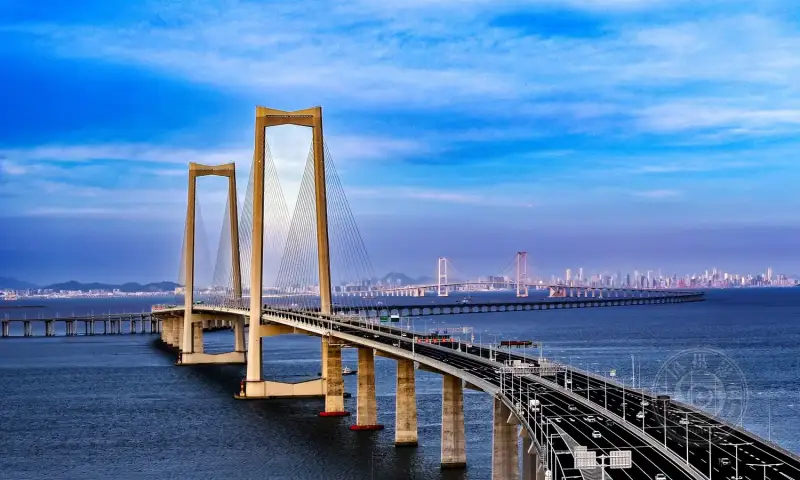
Gold Award, Urban Landscape category, 5th National Aerial Photography Contest Bird's-Eye Vision 2024
The Shenzhen-Zhongshan Link: Road to the Future, by Zhao Langqing (Jiangmen, Guangdong)
(2) Upload: match the platform for exposure
After editing, pick the right platform to raise the exposure and reach of the work. WeChat Channels and Douyin are popular platforms with large audiences, and they are key channels for aerial work. Below are the upload steps and tips for each.
1. Upload through WeChat Channels Manager. WeChat Channels Manager is the official one-stop platform for Channels. It supports multi-person operation, content management, interaction, and a data center. To upload: first open the Channels Manager site, and log in by scanning the QR code with your WeChat account. Then open content management, click Upload Video, and choose the finished video file. During upload, set the title, cover, and hashtags. Keep the title short and catchy, and show the main highlight, for example, DJI Mavic 4 Pro aerial shot: a hidden mountain in clouds. Use popular hashtags about aerial work, scenery, and drones, such as #aerialbeauty #DJIMavic4Pro #godseye, to raise search exposure. After the upload, preview the work, and click Publish when it is right. Channels Manager also lets you create events or collections. Group similar aerial works into a collection so viewers can watch them in a row. The data center shows views, likes, and comments, so you learn how the work spread and use it for future work.
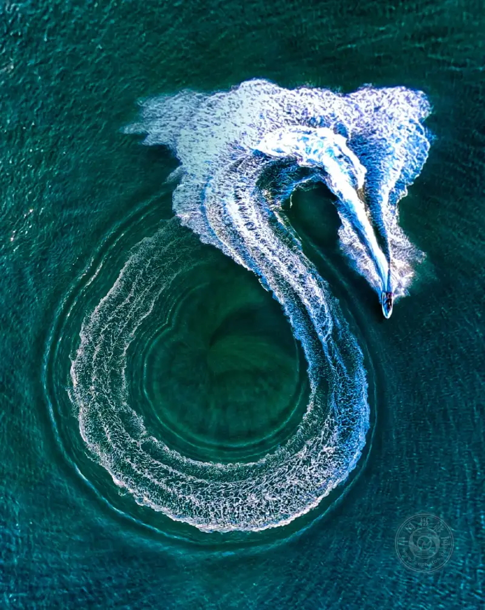
Silver Award, Abstract Art category, 5th National Aerial Photography Contest Bird's-Eye Vision 2024
Flood Dragon, by Li Yutong (Sanya, Hainan)
2. Upload through the Douyin Creator Center. The Douyin Creator Center is a one-stop platform for creators. It covers publishing, management, data analysis, and paid tasks. To upload: open the Creator Center site and log in with your Douyin account. Then open work management, click Upload Video, and choose the aerial video to publish. After upload, set the title, cover, hashtags, and publish time. For Douyin, use a catchy title, for example, Immersive view! DJI Mavic 4 Pro takes you over golden rice fields. Use popular hashtags such as #douyinaerial #dronephotography #visualimpact, and add precise tags tied to the content to raise targeted exposure. Pick a publish time to match when your audience is online. If you schedule it, set the time in advance and the system publishes the work for you, which saves time. The Creator Center also supports rights protection. Join original-content protection, check whether your work was copied, and file a claim in one step to protect your work. The data center gives deep multi-angle data, such as audience profile and view trends, to guide future work.
After you upload, keep interacting with viewers. Reply to comments and messages in time, and build a bond with them. Use the platform data to improve your later shooting and editing, and raise the quality of your work. Also follow the content rules of each platform, so your work has no banned content and is not removed or your account penalized.
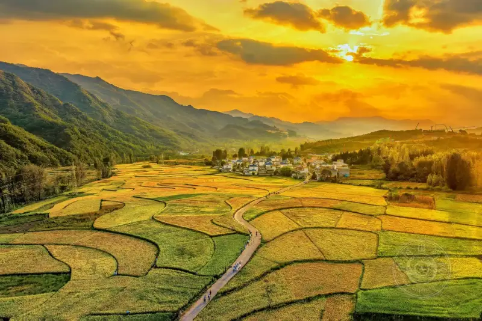
Bronze Award, Nature category, 5th National Aerial Photography Contest Bird's-Eye Vision 2024
Rural Scenery, by Zhang Junping (Pingdingshan, Henan)
In short, drone flight and post-editing work as one whole. Flying is the base, and editing lifts the result. Keep improving your flying skills, master the device and the camera moves, and gain experience in practice. At the same time, learn editing in depth, and raise your creative skill, so aerial footage becomes a work with more force. Through steady learning and practice, matched to each platform, you can use the strengths of a DJI drone, make more good aerial work, and grow in the field.